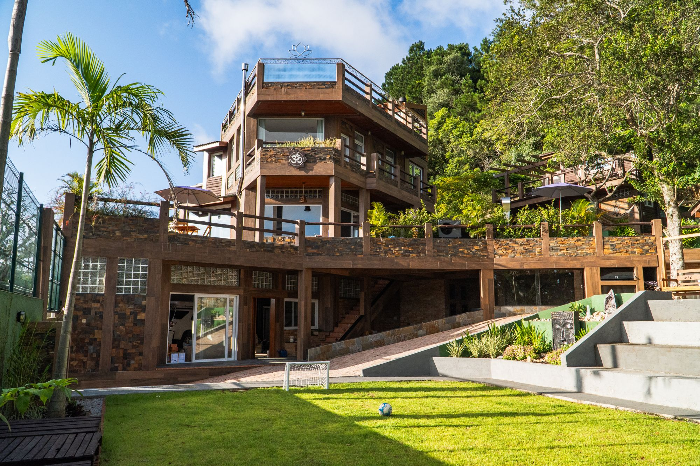
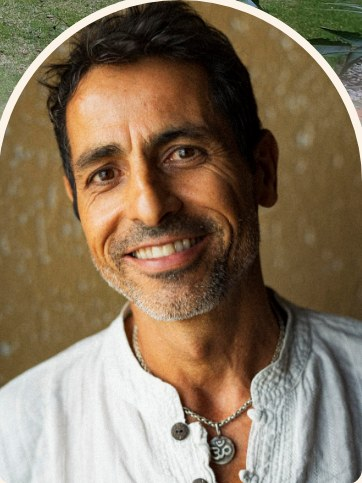
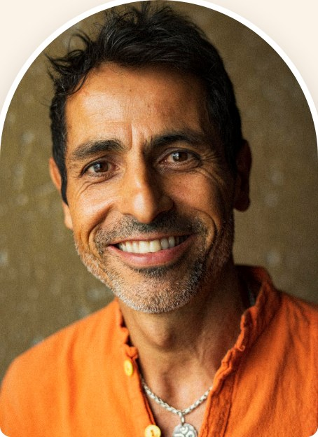
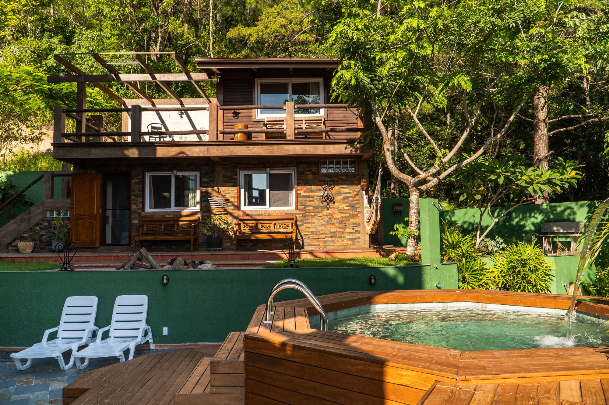

Encontros1 · 2
Individual · Cada um
Corpo · Ayurveda
Investigação da alimentação e do estilo de vida. Dieta, rotina e exercícios para um corpo forte, que sustenta e eleva a energia.

Mentoria · Presencial ou online
Desperte a união sagrada e viva o amor consciente.
Ayurveda como base: corpo forte, energia desperta, conexão profunda. Tantra não é técnica. É presença.

Quando a conexão vira só convivência, os dois sentem: menos presença, menos escuta, menos encontro.
A boa notícia: dá para reacender, com consciência, um passo de cada vez.
O método · Como funciona
Individual · Cada um
Investigação da alimentação e do estilo de vida. Dieta, rotina e exercícios para um corpo forte, que sustenta e eleva a energia.
Individual · Cada um
História, padrões e desafios de cada um. Meditação, respiração e técnicas de purificação para equilibrar as emoções.
Juntos
Dinâmicas de presença, intimidade, vulnerabilidade e comunicação não violenta para viver o amor consciente.
Cerca de 45 dias · presencial ou online
O que vocês levam

Quem conduz
“O Tantra pede um corpo forte e uma mente serena. Por isso começo pelo Ayurveda: para que a energia desperta tenha onde morar.”

Presencial ou online
Florianópolis · SC. Ou de onde vocês estiverem, online.
Os encontros 1 e 2 cuidam do corpo de cada um com o Ayurveda. Os encontros 3 e 4 cuidam da mente com o Yoga. Os encontros 5, 6 e 7 são do casal, com as dinâmicas do Tantra.
Cerca de 45 dias, do primeiro ao sétimo encontro.
Presencialmente na Casa da Montanha, em Florianópolis, ou online, de onde vocês estiverem.
Valores e agenda são enviados pelo WhatsApp (48) 99165-1080. As vagas são limitadas.